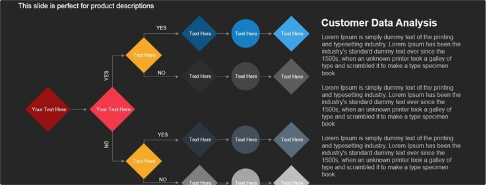

Where Market Trends
Meets Proven ScienceAt Adology, we combine the power of real-time market insights with over 100 years of marketing science to help you make smarter creative decisions. Our AI is built on a foundation of the latest trends happening across industries and platforms, while our recommendations are grounded in the most reliable marketing research. This perfect blend of Trends and Science helps brands stay ahead of the curve and craft more effective, data-driven creative strategies.
We are entering a new world. The technologies of machine learning, speech recognition, and natural language understanding are reaching a nexus of capability. The end result is that we’ll soon have artificially intelligent assistants to help us in every aspect of our lives. Amy Stapleton
Our AI Driven
PlatformAdology’s AI-powered platform brings together real-time trends and marketing science to deliver unparalleled creative insights. Our modules are designed to give you full control over your creative strategy, helping you stay ahead of the competition with data-backed decisions. Discover how each of our key features works together to transform your creative process.
Creative Intelligence at Scale
At Adology, we bring together real-time trends from across social media, industry, and markets with the proven principles of marketing science. Our AI allows you to scale your creative strategy, delivering the granularity and depth needed to optimize every ad with precision. Whether you’re tracking millions of ads or analyzing niche creative tactics, Adology is built to provide you with the insights you need to succeed.
Scalability
We analyze millions of ads across various platforms, providing you with insights that scale with your business, no matter how large or small.
Trusted By Innovators
In MarketingAdology’s AI-powered platform brings together real-time trends and marketing science to deliver unparalleled creative insights. Our modules are designed to give you full control over your creative strategy, helping you stay ahead of the competition with data-backed decisions. Discover how each of our key features works together to transform your creative process.
Adology helped us analyze creative strategies at a depth we didn’t think possible. Their blend of market trends and research-backed insights has completely transformed how we approach ad optimization.

Sarah.J
VP of MarketingWith Adology’s platform, we’ve been able to keep our clients ahead of the competition. The data-driven insights from both industry trends and marketing science have been key to creating winning campaigns.

Thomas K.
Creative DirectorStands Apart
In a crowded market of AI-driven marketing tools, Adology stands out by combining real-time market trends with 100 years of marketing science to provide brands with creative insights that go beyond the surface. While others focus on data alone, we ground our insights in both what's happening today and proven marketing principles to deliver creative intelligence you can trust.
Stands Apart
Ready to unlock the power of creative intelligence grounded in real-time trends and marketing science? Adology delivers the insights you need to stay ahead of the competition, optimize your campaigns, and drive results.